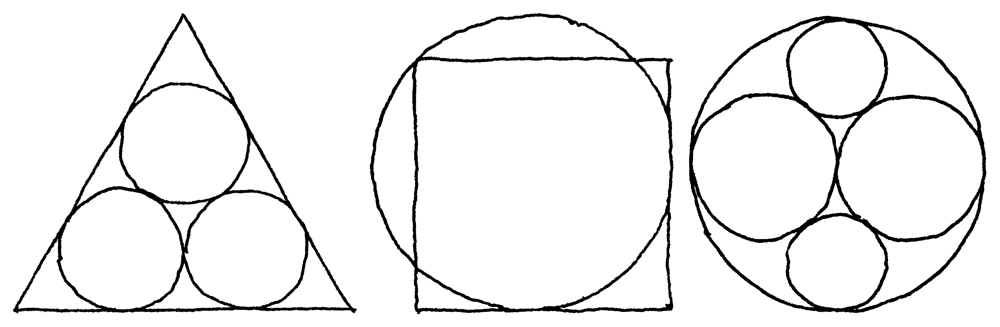
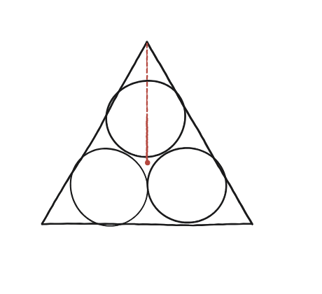
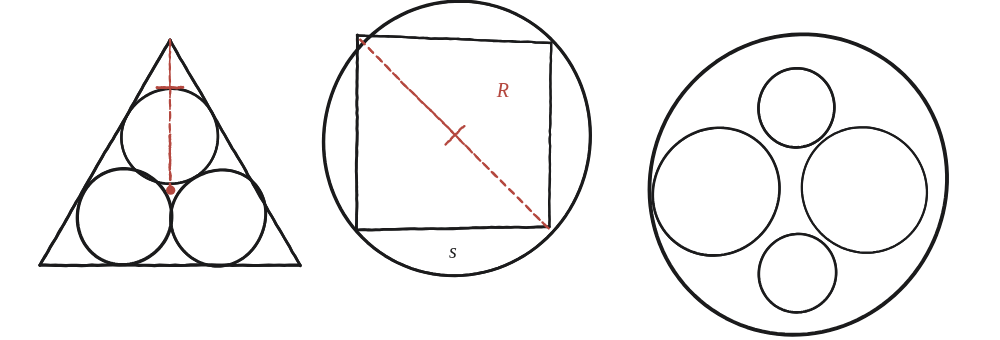

Alguns problemes de geometria parlen per si sols.

Què demanen aquests dibuixos
Aquesta pregunta no porta enunciat escrit: el llibre dona tres imatges —un triangle, un quadrat, un cercle, cadascun amb cercles tangents a dins— i dona per fet que cal trobar la mida del cercle petit en funció de la mida gran, a cadascuna. És el mateix tipus de pregunta que la Qüestió 22, tres vegades.
El quadrat: la relació ja coneguda
Al quadrat amb el seu cercle circumscrit, la diagonal marcada dona directament la relació: si el quadrat té costat s, la diagonal —que és el diàmetre del cercle— val s√2, i per tant el radi és R = s√2/2. És exactament el mateix argument del primer panell de la Qüestió 40: la diagonal del quadrat és el diàmetre de la circumferència que hi passa pels quatre vèrtexs.
El triangle: el mateix truc de q22, reaplicat
Per als tres cercles iguals dins d'un triangle equilàter, cal unir el centre de gravetat del triangle amb el centre d'un dels tres cercles, i també amb el vèrtex més proper. Aquests dos segments es poden mesurar de dues maneres diferents —la mateixa "dues maneres" de la Qüestió 22 i la Qüestió 23.

Dues expressions per a la mateixa distància
Amb costat L, la distància del centre de gravetat a un vèrtex és L/√3 (dos terços de la mediana, que fa L√3/2). La distància d'aquest mateix centre de gravetat al centre d'un cercle és aquesta xifra menys 2r —recorrent el mateix segment cap enrere, dos radis abans d'arribar al vèrtex. Però aquesta distància es pot mesurar també d'una altra manera: els tres centres dels cercles formen, per simetria, un triangle equilàter petit, concèntric amb el gran, de costat 2r (dos radis, per la tangència entre cercles veïns) —i per tant la distància del centre de gravetat comú a un d'aquests centres és, aplicant la mateixa fórmula que abans però al triangle petit, 2r/√3.
Igualant les dues expressions: L/√3 − 2r = 2r/√3. Resolent per r: r = L(√3−1)/4.

Quadrat: R = s√2/2 (la diagonal és el diàmetre). Triangle: r = L(√3−1)/4, de dir la distància del centre de gravetat a un vèrtex de dues maneres —L/√3 directament, i també 2r/√3 pel triangle petit que formen els tres centres dels cercles, tenint en compte que aquesta distància és 2r menys curta que la primera. El tercer panell (cercles dins d'un cercle gran) segueix la mateixa família de puzle, sense resoldre aquí.
Comprovació
Triangle de costat L=4: r = 4(√3−1)/4 = √3−1 ≈ 0,732. Quadrat de costat s=4: R = 4×√2/2 = 2√2 ≈ 2,828.